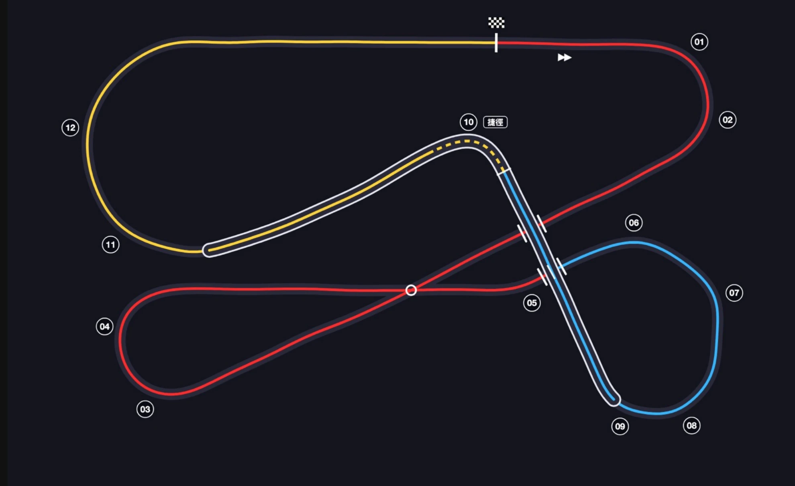
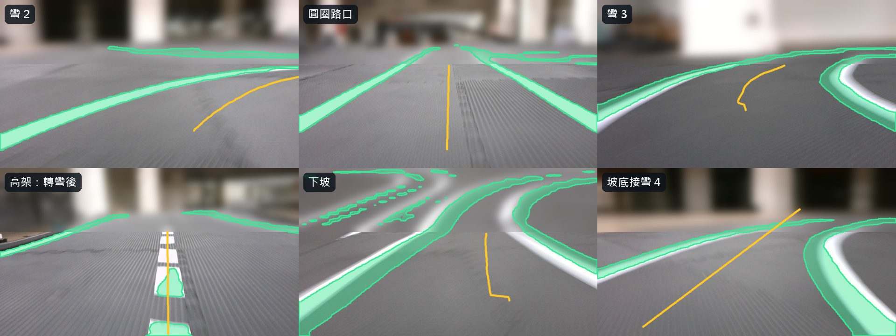
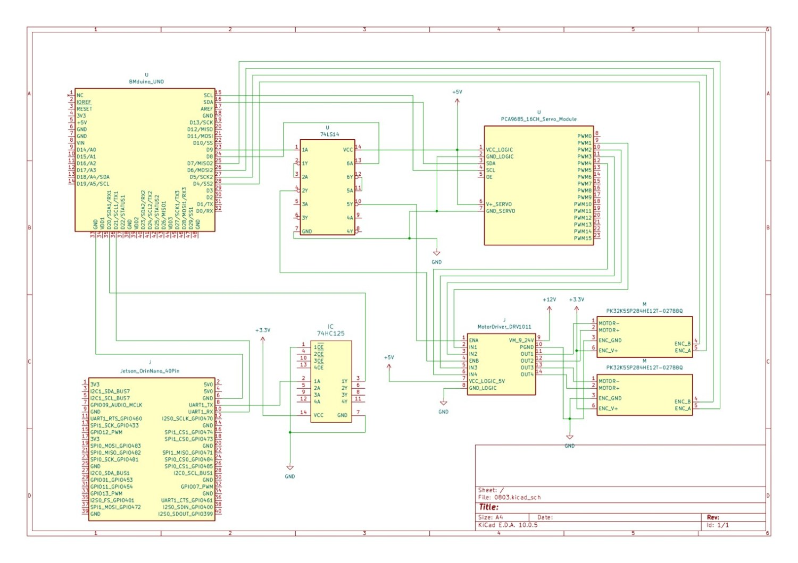
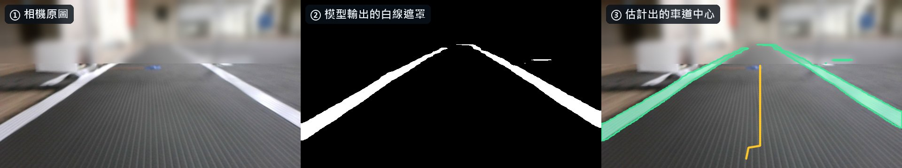
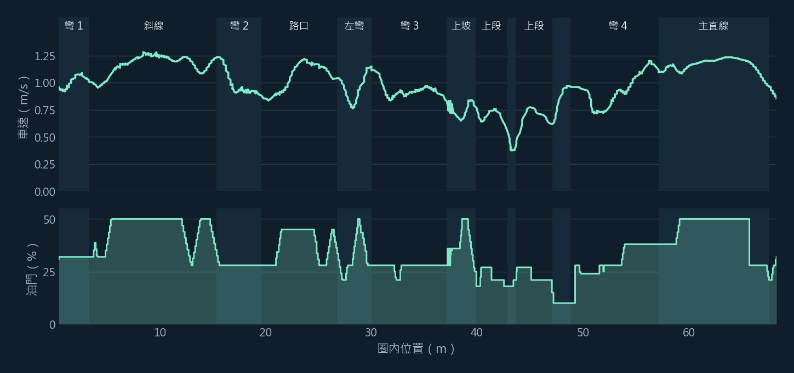
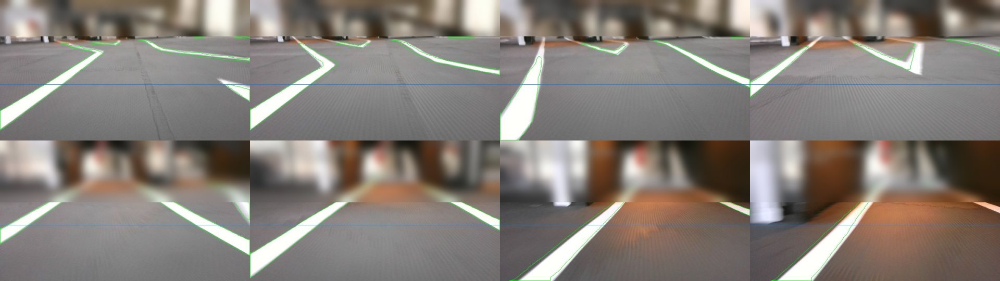
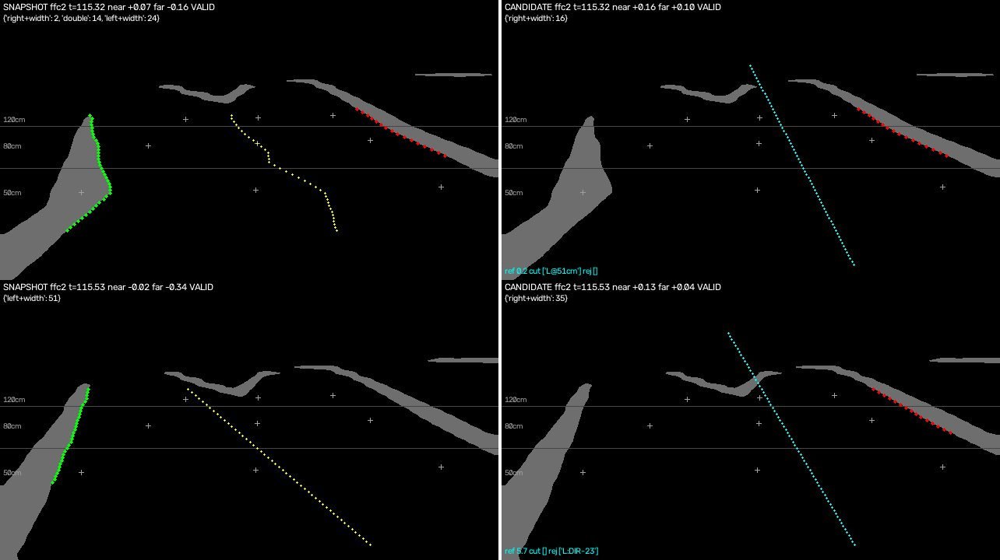
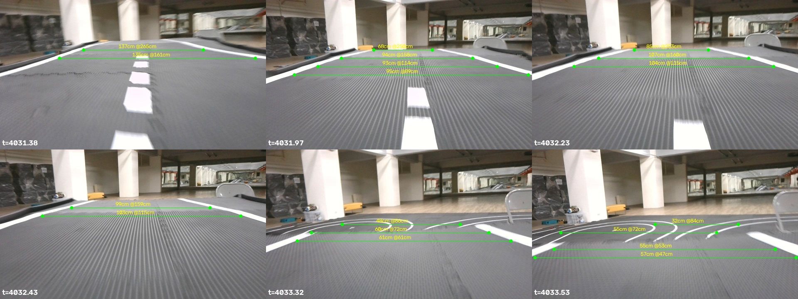

一台只靠相機的自走車，
怎麼從 110 秒跑到 72 秒
視覺循線自走車 · 開發技術說明（資料截至 2026-11-15）
一圈 67.7 公尺
4 個彎、2 個路口、1 座高架。
這份簡報說明：系統怎麼組成、每一次修改怎麼驗證、
成績怎麼進步，以及哪些方法試過之後放棄。
Jetson Orin Nano 影像分割模型 V4 陀螺儀＋編碼器 AI 協作開發
第一次完成兩圈是 11-07，每圈 109.9 秒。

| 路段 | 點位 | 特徵 | 主要難點 |
|---|---|---|---|
| 彎 1 | 01～02 | 右彎 150°、半徑約 1.28 m | 高速直線後進彎，舵機容易打到底 |
| 斜線＋路口 | 02～03 | 穿過隧道口與圓圈交叉 | 地上有 V 字標線，容易被當成邊線 |
| 彎 2 | 03～04 | 右彎 210°、半徑約 1.18 m | 最急的彎；出彎後緊接圓圈路口 |
| 彎 3 | 06～09 | 右彎約 268° 迴圈，尾段上坡 | 彎中丟線；上坡時車速掉太多 |
| 上段 | 09～10 | 高架、虛線左轉約 87° | 只有虛線可跟，轉完後沒有橫向參考 |
| 下坡＋彎 4 | 10～12 | 約 17.5° 下坡後接 180° 右彎 | 落地瞬間影像劇烈變化，容易轉不夠 |
場地數字
- 一圈長度：67.7 m（各圈誤差約 0.24 m）
- 車道內寬：46 cm；車身最寬 32 cm，左右各剩約 7 cm
- 一圈總轉角：約 −714°（右轉為主）
- 半徑：彎 1／2／4 為實量，彎 3 未量

彎道只看得到一條線
彎 2、彎 3 的內側線常在畫面外，只能靠一條線加上記住的車道寬推算中心。
路口有多餘的線
圓圈路口與下坡時，畫面裡同時有別條車道的線，要判斷哪一條才是自己的。
高架上沒有車道線
轉彎後只有中間的虛線，兩側邊線很遠；最後一公尺連虛線也沒有。
Jetson Orin Nano（車上）
- 相機擷取（640×360）
- 影像分割模型推論（GPU）
- 路徑估計與 PID 控制迴圈
- 陀螺儀紀錄 50 Hz
- 每一輪完整紀錄（影像、遮罩、每格命令）
BMduino 微控制器（車上）
- 透過 UART 接收 Orin 命令
- 經 I²C 的 PCA9685 輸出舵機與馬達 PWM
- 讀取雙輪編碼器
- 急停按鈕、500 ms 無命令自動停車
- 油門上限 50%（韌體限制）
筆電工作台
- 參數設定、下達任務、顯示結果
- 下載每輪紀錄做離線分析
- 離線重播：用錄到的資料重跑控制程式
- 不參與即時控制，斷線不影響車子跑完該輪
| 項目 | 規格 | 狀態 |
|---|---|---|
| 輪徑／車寬 | 7.5 cm／32 cm（輪胎最外側） | 實量 |
| 相機最近可見地面 | 前輪最前緣往前 27 cm | 實量 |
| 相機型號、舵機與馬達型號、電池規格 | 待補 | 需要本人提供 |
| 整車照片 | 待補 | 需要本人提供 |

| 連接 | 說明 |
|---|---|
| Orin ↔ BMduino | UART，經 74HC125 做 3.3 V／5 V 電位轉換 |
| BMduino → PCA9685 | I²C；16 通道 PWM 模組，輸出舵機與馬達驅動訊號 |
| PCA9685 → 馬達驅動板 | 兩顆馬達的 PWM 與方向訊號（另有 74LS14 做訊號整形） |
| 馬達編碼器 → BMduino | 兩輪各一組 A／B 相訊號 |
| 急停按鈕 → BMduino | 直接進微控制器腳位，不經 Orin |
640×360→分割模型 V4
白線遮罩→路徑估計
車道中心→PID＋各路段模組
舵機與油門→UART → 微控制器
PWM 輸出

路徑估計在做什麼
- 看得到兩條邊線：取中間。
- 只看得到一條：用「這條線＋記住的車道寬」推算中心。
- 路口另有切換器：判斷主路徑不可信時改用備用走廊。
- 輸出「影像誤差」：車道中心相對畫面中心的偏移（1.0 約等於 40 cm）。
控制在做什麼
- PID 把影像誤差變成舵機命令（目前 kp 220／ki 40／kd 30）。
- 陀螺儀內迴圈：抑制車頭擺動。
- 轉向間隙補償：換方向時多送 ±55 µs。
- 速度排程：依誤差、彎道、坡度決定油門。
- 各路段模組：路口、上段、坡底各有專屬處理。
- 地標：每個彎的起點與終點（累積轉角越過門檻）、坡道、坡頂、下坡、落地、虛線轉彎起訖。
- 里程：地標之間用編碼器算距離，誤差約 ±0.2 m。
- 用途：路口保護窗口、減速區、各彎油門都改成「以地標為錨點」，不再依賴影像判斷彎道結束。
為什麼需要它
原本用影像判斷「彎 2 結束了」，實際會晚 1.7～8.2 m。路口保護窗口因此開在錯的位置，造成多次走錯跑道或撞柱。
改用地標後，窗口位置固定在彎 2 結束後約 3 m，誤差 0.3 m 內。
| 保護 | 條件 |
|---|---|
| 實體急停 | 按鈕直接進微控制器；韌體加 10 ms 去彈跳，避免雜訊誤觸 |
| 命令逾時 | 微控制器 500 ms 沒收到命令即停車 |
| 影像過期 | 控制用影像超過 0.4 秒即停車 |
| 丟線 | 持續沒有有效路徑即結束該輪 |
| 卡住偵測 | 有油門但兩輪幾乎不轉持續 1 秒即停車 |
| 下坡過速 | 輪速超過門檻時壓低油門 |
給 AI 的動車規則
- 沒有當次明確授權，不發舵機或馬達命令、不燒錄、不重啟車控服務。
- 每次部署前先備份車上現況，並記下退回方式。
- 「模型辨識成功」「離線重播通過」不等於「實車可安全行駛」，報告時分開寫。
影像、遮罩、每格命令→② 離線分析
找出機制→③ 候選程式
附開關→④ 重播證明
開關關閉＝逐格相同→⑤ 上車驗證
看數字決定留或退
開關全關＝逐格相同
新程式上車前，先用過去的實跑紀錄重播數萬到十幾萬格，確認在開關關閉時，舵機、油門、停車時機與原版完全一樣。這樣上車後若行為改變，就確定是新功能造成的。
每項都有退回條件
開啟前先寫下「看到什麼數字就退回」。例如補償門檻 30→60 預期減少擺動，實跑反而擺幅變大、圈速慢 3 秒，當場依規則退回。
不同路段可以同輪測
管不同路段的修改互不影響，可以同一輪一起開；會互相影響的（例如上段油門與虛線轉彎）就分開測。
分工
| 誰 | 做什麼 |
|---|---|
| 人 | 現場操作、觀察車子、量尺寸、每次動車與部署的授權、決定方向 |
| 主對話 AI | 分析紀錄、提出方案、連線部署、複核子代理的結果 |
| 離線子代理 | 各自在獨立資料夾做一個題目，交回摘要與證明，不連車 |
規則檔（AGENTS.md）裡寫了什麼
- 統一的跑道地圖與彎道編號。
- 動車、燒錄、重啟的授權界線。
- 「已驗證」與「未驗證」必須分開說明。
- 筆電延遲與車上控制延遲要分開判斷。
- 目前車上的完整狀態與每次變更的備份位置。
| 時間 | 階段 | 做了什麼 | 結果 |
|---|---|---|---|
| 10 月中 | 影像辨識與工作台 | 錄影、標註、訓練分割模型（V1～V5）；建立筆電工作台與安全的車控入口 | 採用 V4；V5 未通過整體驗證，不取代 |
| 10 月下旬 | 路徑算法檢討 | 27 輪 5,418 格重播比較；人工判讀 4 輪；改用獨立的線估計算法 | 路徑計算由約 47 ms 降到約 2 ms（筆電） |
| 11-07～08 | 首次完成整圈 | 加入陀螺儀、彎道地圖、速度排程 | 兩圈，每圈 109.9 → 93.0 秒 |
| 11-10～11 | 逐項補丁 | 兩天內約 40 項修改，逐輪調整 | 最快 85.8 秒，但完成率低；六輪連續失敗後決定凍結 |
| 11-12～13 | 量測與整合 | 實測轉向間隙；盤點 72 層控制；重構成分段表；整合版上車 | 連續 5 圈約 82 秒、無失敗 |
| 11-14～15 | 定位與提速 | 地標定位、位置式減速區、各彎油門、坡底改裝 | 連續多圈約 72 秒 |
| 日期 | 單圈 | 主要變更 | |
|---|---|---|---|
| 11-07 | 109.9 | 首次兩圈 | |
| 11-08 | 93.0 | 控制參數調整 | |
| 11-11 | 85.8 | 彎道與路口多項修正（當時完成率低） | |
| 11-12 | 81.9 | 轉向間隙補償 ±55 µs | |
| 11-13 | 82.2～82.8 | 整合版；首次連續 5 圈無失敗 | |
| 11-14 下午 | 79.3～80.7 | 微分增益 60→30、路口影像修正、落地油門 | |
| 11-14 傍晚 | 73.3～76.8 | 加速反應加快、彎 4 油門、上坡保底、上段提速 | |
| 11-14 收工 | 71.9～72.9 | 地標定錨、彎 1 油門、坡底改裝 | |
| 11-15 | 71.8～72.8 | 彎 3 丟線修正、彎 2 舵量下限（圈速不變，可靠性提高） |
11-14 一天 −7.6 秒
80.35 → 72.6 秒。有事先估計的項目，實得與預估都相符（例如預估 −1.82 秒、實得 −1.80 秒）。
平均車速
67.7 m ÷ 72 秒 ≈ 0.94 m/s。油門上限 50% 時平地極速約 1.22 m/s。
全油門時間只有 14%
一圈中約 32% 是彎道或誤差大的低油門，約 22% 在等誤差穩定或爬升。

全油門只出現在三段直線
斜線、圓圈路口前後、主直線。其餘時間油門多在 28% 上下。
最慢的地方在高架
虛線左轉時車速掉到約 0.4 m/s；整個上段平均只有約 0.6 m/s。
彎道約 0.9 m/s
四個彎的車速差不多，但彎 4 半徑是其他彎的兩倍，還有提速空間。
| 時期 | 完整圈 | 失敗 |
|---|---|---|
| 11-13（整合前） | 約 11 | 6 |
| 11-14 整合版之前 | — | 6 次碰撞或出界 |
| 11-14 整合版之後 | 25 | 0 |
| 11-15 | 約 15 | 1（坡底轉不夠） |
三天 44 輪共 31 次失敗的位置（11-11～13）：彎 2 後圓圈路口 11、上段 6、下坡與坡底 6、彎 3 2、彎 2 2、彎 1 與 V 字 2、彎 4 1。
目前剩下的風險（依序）
- 落地後轉不夠（約三分之一的落地會壓到外側）
- 彎 2 彎中舵機打到底
- 虛線轉彎中途看丟虛線
- 上段轉完後沒有橫向參考
- 彎 1 油門提高後舵機餘裕不足
怎麼量的
- 在平地地墊上，相機不參與；用陀螺儀與編碼器量車子實際的彎度。
- 舵機命令每 0.8 秒走一階 20 µs，由右到左、再由左到右。
- 比較兩個方向下，同一個命令對應的彎度差多少。
影響
- 出彎後車子會固定偏一邊走 2～3 秒（命令變了、輪子沒動）。
- 小幅修正被間隙吃掉，控制器以為沒效而加大。
處理
- 在輸出最後一步做一次反轉補償 ±55 µs（合計 110，約為量到的七成）。
- 直線誤差中位由 0.26～0.39 降到 0.06～0.19。
- 副作用：先前在「有間隙」下調好的參數變得太強，後來把微分增益由 60 降到 30。
盤點結果（11-12）
- 會改寫舵機命令的位置約 30 處，共 72 層。
- 當天實際改到命令的 39 層、開著但從未觸發的 10 層、已關閉但還在程式裡的 10 層。
- 兩套間隙補償互相觸發：上段 75% 的格子命令跳動超過 100 µs。
- 「看似相同其實不同」的條件 11 組，例如四種「坡底平地」的定義、四個陡坡門檻。
整理方式
- 做重播工具，能逐格比對兩版程式的輸出。
- 刪掉 11 個已關閉或只記錄的層。
- 把主迴圈重構成「先判斷目前在哪個路段，再依序執行該路段的層」。
- 每一步都證明輸出與前一版逐格相同（共 5 萬多格）。
| 當時的解釋 | 依據 | 後來的結論 |
|---|---|---|
| 相機認錯線 | 路口內影像誤差突然反向 | 部分不成立：多數時候相機是對的，車道中心確實在車的右側 |
| 車速太快 | 走錯那圈進路口較快 | 不成立：12 次通過都是 1.12～1.25 m/s，把另一個路口搞混了 |
| 保護窗口位置錯 | 彎道結束判定晚 2～8 m | 成立：改用地標定錨後窗口位置固定 |
| 車道線與圓圈標線接成「<」形 | 逐格重跑路徑估計 | 成立：線沿著標線延伸到另一條車道；改在地面座標檢查轉折與方向後，走錯格數大幅減少 |

- 前兩格：左邊的車道線在前方與圓圈標線接成「<」形。
- 第三、四格：車已經開始左偏，原本的右線移出畫面。
- 下排：相機改跟左側那條線，車子進了隧道方向的另一條車道。

彎道受限於轉向能力
彎 2 目前的車速（0.95 m/s）已超過舵機打到底能轉的極限（約 0.87 m/s），所以每圈都打到底。要更快，必須在進彎前就開始轉（前饋），不能等相機看到。
高速時相機來不及
約 1.0～1.1 m/s 以上，只靠相機入彎一定會晚。地標定位可以預告彎 2、彎 3 的位置（誤差 0.2～0.3 m），彎 1 太粗還不行。
上段佔一圈的 16%
高架段 7 m 要走約 11.5 秒。虛線轉彎受限於「看到虛線時已經只剩 0.9 m」，不是抓地力。
估計（離線模型）
只調設定：約 70.5～71 秒。
加上直線位置式油門：約 69 秒。
再加前饋轉向：約 65～68 秒。
60 秒在目前油門上限下做不到。

- 原本的程式只找中間的虛線；虛線結束後約 3 秒只靠陀螺儀保持方向，沒有任何橫向資訊。
- 實際上兩條外側邊線一直都在遮罩裡，只是比一般車道寬得多，原本的估計不認得。
| 方法 | 想解決什麼 | 放棄原因 |
|---|---|---|
| 分割模型 V5 | 提高辨識 | 整體驗證未通過，維持 V4 |
| 彎道外移（路徑往外推 5～10 px） | 彎道壓內線 | 彎向判斷有反向的格子；之後改用別的算法 |
| 整合式路口算法（K 系列）作為一般循線 | 路口選路 | 路徑耗時高（約 47 ms）；一般道路改用獨立線估計，直線判讀 11／11 較接近中心 |
| 線外退回規則 | 擋掉指向跑道外的路徑 | 現行也無目標時擋錯 3／4 |
| 實體車道寬（46 cm）取代像素比例 | 單線估計的跳動 | 跳動 17→16，最大跳動反而變大；真正的大跳動是左右線認錯 |
| 上段用實線邊線 | 虛線轉彎後的參考 | 遮罩中虛線常黏成長線，認錯誤差約 55 cm（後來改用外側兩條邊線，仍在評估） |
| 下坡時預瞄遠處的彎 4 | 落地後轉不夠 | 看得到彎，但無法預測車子需要多少轉向（區分能力等於亂猜） |
| 方法 | 想解決什麼 | 放棄原因 |
|---|---|---|
| 記住一圈的方向照著走 | 不靠相機過路口與坡底 | 各圈方向差 2～6°，盲走 3 m 橫偏超過餘裕；只保留「定位」用途 |
| 路口內直行（忽略相機） | 路口走錯 | 進路口時車頭本來就偏 2.9°，模擬橫偏變大 |
| 補償門檻 30→60 | 直線微擺 | 實跑擺幅 1.6°→3.7°、圈速慢 3 秒，當場退回 |
| 舵機中心 1500 | 直線固定偏差 | 直線變好但坡底 3 次失敗 2 次；退回 1480 |
| 自動舵機中心 | 免手動調中心 | 估計器左右平均偏高，關閉 |
| 彎 2 最小舵量保持 | 彎 2 轉不夠 | 轉太多、反覆啟動，當輪關閉 |
| 坡上專用轉向律 | 下坡擺動 | 上車後車到坡底偏外側、擺動未減，退回；後來發現擺動約一半來自線來源切換 |
| 轉彎後加速＋滑行 | 上段提速 | 滑行把車壓到 0.25 m/s，且未對準就加速造成過衝 16° |
| 一輪改一項的補丁方式 | 快速修問題 | 單圈完成率只有五成多，改為凍結、重複、整合 |
已實車驗證
- 連續 4 圈約 72 秒（11-15）。
- 地標定位、位置式減速區、各彎油門。
- 彎 3 丟線修正：丟線由 7／21 次降到 3／15 次。
- 彎 2 進彎舵量下限：完全不打到底的通過由 1／21 提高到 7／15。
- 卡住停車、急停去彈跳、通訊回覆遺失不結束該輪。
已完成離線、尚未上車
- 坡底轉不夠的修正（依落後量放寬上限、改用正確路徑）。
- 彎 2 舵量下限延長到彎中。
- 上段用外側兩條邊線當方向基準。
- 下坡車道寬比例修正。
- 直線位置式油門、進彎前饋轉向。
- 到場檢查：核對鏡頭姿態、同步紀錄、量上段與坡口尺寸。
- 第 1 輪：坡底修正＋彎 2 下限延長＋上段方向基準（三個不同路段）。
- 第 2 輪：上段轉彎後加速（不用滑行）。
- 第 3 輪：下坡車道寬修正。
- 之後各自單獨：直線加速門檻、位置式油門、彎 1 舵量下限。
| 目標 | 需要什麼 |
|---|---|
| 約 71 秒 | 只調設定 |
| 約 69 秒 | 加上直線位置式油門 |
| 約 65～68 秒 | 再加進彎前饋轉向、上段再快 1.5～2 秒 |
| 60 秒 | 目前油門上限下做不到 |
先量測，再設計
轉向間隙、實際直行點、延遲、各彎半徑，量出來的數字常和假設差很多。量之前調的參數，量之後多半要重調。
離線通過不等於實車可行
重播能證明「沒改壞」，不能證明「會變好」。11-15 三項離線合理的修改，上車後兩項變差。
補丁有上限
累積到 72 層之後，新補丁修好一處、弄壞另一處。停下來盤點與重構，比繼續加更快。
把結論的更正也記下來
多個「當時確定」的原因後來被推翻。紀錄中保留更正，才不會重複走同一條錯路。